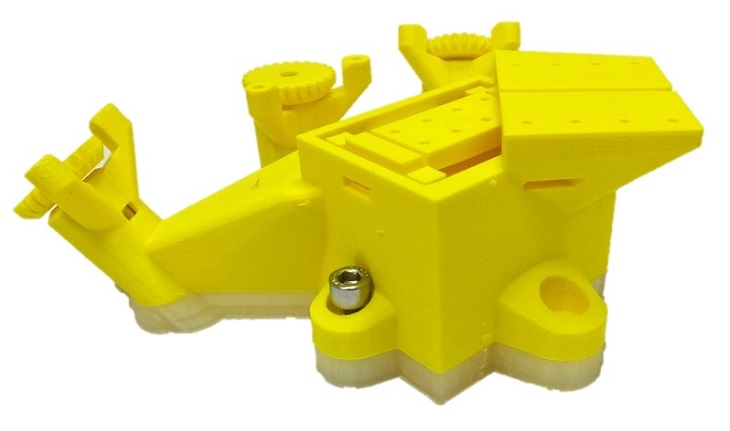

OpenFlexure Block Stage: 3D printed sub-micron mechanical precision

OpenFlexure Block Stage is a 3D printed flexure translation stage with sub-micron mechanical positioning. You can get the files to build it on GitHub. The project is 3-axis, short travel, high accuracy spinoff from the stage of the amazing OpenFlexure Microscope which we still haven't covered, but we thought this stage deserved a post of its own. The principles behind the stage are detailed in a paper on the OpenFlexure DIY microscope written by James Sharkey, Darryl Foo, Alexandre Kabla, Jeremy Baumberg, and Richard Bowman.
As a cheap accurate mechanical stage, the design is initially set up as a replacement for fiber alignment stages, but the designers note it might also be useful for electrophysiology or nanotechnology labs. We have even seen OpenFlexure Stages on other DIY microscopy setups, such as OptiJ: Open-source optical projection tomography for $3000.
If you don't want to print the stage yourself, the GitHub notes that if you email WaterScope it should be possible to get this stage as a custom order.